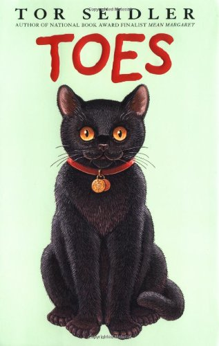

Toes
Toes was born in a litter of kittens. There's something different about him, he has 28 toes. Out of curiousity, he wanders from his yard, to find himself with Sabastian. Sabastian comes to love Toes and take care of him, is this where Toes really belongs?
